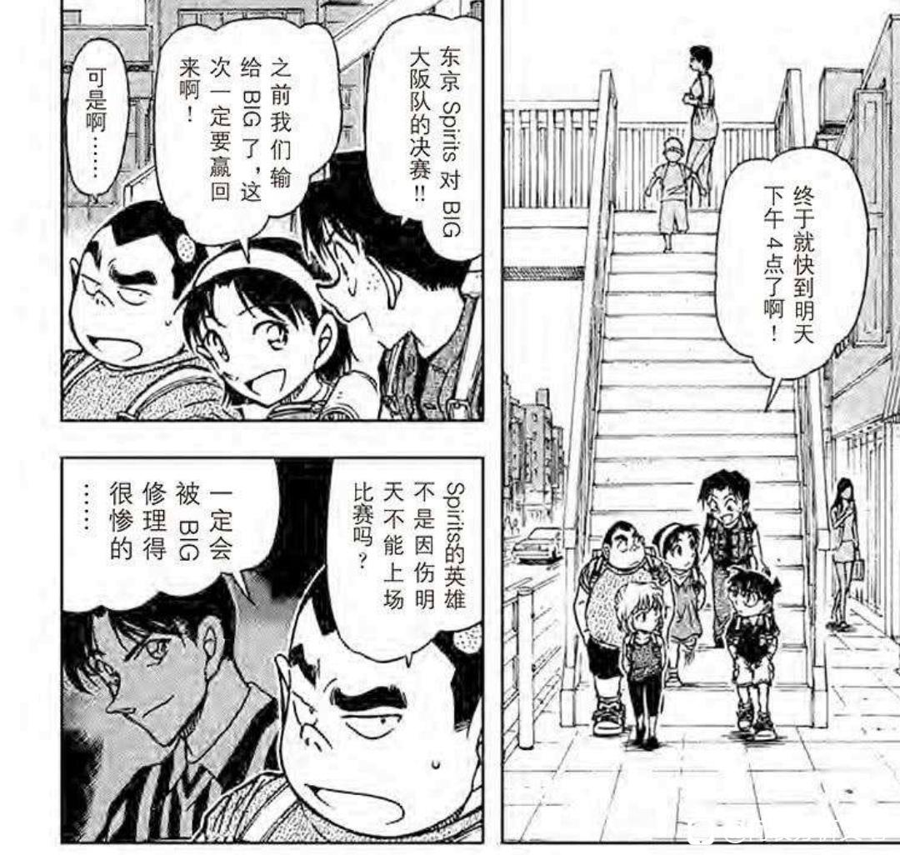

之前有写过其中一话的内容，但这次更全面一些，因为发现比护吃醋之后就干脆把相关篇章都拿出来看看
字数预计5k左右
慢慢写吧，如果各位擦有不同的看法欢迎一起交流～
字数预计5k左右
慢慢写吧，如果各位擦有不同的看法欢迎一起交流～
先放一组目录，擦们可自取对照着看
以及楼主打算先分析比护迄今最后的登场1043话，来说明为什么他在吃醋，然后再由前往后推——反正各位只需要知道小柯有在不爽哀对比护的箭头就可以了。从全文来看，当然不止是比护，会把这期间发现的一些好玩的东西一起写上，各位如果发现新的一起补充～
（如果有看过我发的1043话分析接下来四五层楼都可以略过，直接翻到下面比护初登场的分析开始看吧）
以及楼主打算先分析比护迄今最后的登场1043话，来说明为什么他在吃醋，然后再由前往后推——反正各位只需要知道小柯有在不爽哀对比护的箭头就可以了。从全文来看，当然不止是比护，会把这期间发现的一些好玩的东西一起写上，各位如果发现新的一起补充～
（如果有看过我发的1043话分析接下来四五层楼都可以略过，直接翻到下面比护初登场的分析开始看吧）
2023-10-25 22:26 | neon年年:预警：楼的文笔比较粗糙，先致歉一下2023-12-20 09:08 | aB-:歪个楼 做这个目录的app是什么啊2023-12-25 03:46 | 格子普的春天:回复 aB- :应该是幕布
柯南出于好奇询问什么是double H，在小哀回答后就瘪着嘴开始看手机，带有不爽情绪进入查案状态。这里经历了两次情绪变化（绿箭头）。
直接说结论，他问是好奇小哀的话题，在收到小哀回复后，变成流汗是要【强撑】他的正常。结果演不下去了，这个女人还“嘻嘻”地笑，【不爽不开心】，于是拿出手机看点别的。
灰原这种明显的正向情绪并不是因为他，他烦，于是下意识用查案来逃避现实转移注意力。
直接说结论，他问是好奇小哀的话题，在收到小哀回复后，变成流汗是要【强撑】他的正常。结果演不下去了，这个女人还“嘻嘻”地笑，【不爽不开心】，于是拿出手机看点别的。
灰原这种明显的正向情绪并不是因为他，他烦，于是下意识用查案来逃避现实转移注意力。
2023-10-25 15:25 | neon年年:一、比护隆佑（目前为止的）最后一次登场2023-10-25 20:15 | 贴吧用户_5Vy2DXM:右边写的灰原笑得有多开心，小柯现在的脸色就有多不爽2023-10-26 07:17 | 爱鸢尾的爱丽丝:光彦点出了柯不爽的点：哀的首字母也是h。命运共同体开开心心和别人组double h组合了。小柯别急，新志一上线 double sh妥妥的2023-10-26 07:50 | 小野寺的情书🌸:回复 贴吧用户_5Vy2DXM :绷，两人幸福指数共享是吧2023-10-26 18:57 | 白某笑而不语🐶:2023-10-27 08:39 | 天下归一王者胜:“灰原这种明显的正向情绪并不是因为他，他烦”，这条分析太精到了！2023-10-27 11:41 | 贴吧用户_7bXQb2R:“现在的我可不是考虑这个的时候”，哇塞，他好在意哀也是H！！！2023-10-31 08:46 | 喝杯豆浆吧♤:小柯的表情实在太难看了哈哈哈哈哈哈2024-01-01 02:13 | 贴吧用户_6S5DW9bQ1:回复 贴吧用户_7bXQb2R :小柯：明明我和她是双S

好玩的是刚子此处特意强调了“滴”——表示柯南此时按手机的力度较重。
更好玩的是右边旁白出现“灰原笑得好开心。”的字样。这是谁的体会呢，如果是光彦和步美看到小哀如此开心，以小孩儿的性格会直接表达没必要放旁白，所以旁白应该是柯南的内心真正所想（再者也只能是他才能完成恋爱喜剧里“喜”的要素）。
一句话概括柯南心情——【灰原笑得好开心，却因为别人，所以我不爽】
更好玩的是右边旁白出现“灰原笑得好开心。”的字样。这是谁的体会呢，如果是光彦和步美看到小哀如此开心，以小孩儿的性格会直接表达没必要放旁白，所以旁白应该是柯南的内心真正所想（再者也只能是他才能完成恋爱喜剧里“喜”的要素）。
一句话概括柯南心情——【灰原笑得好开心，却因为别人，所以我不爽】
2023-10-25 20:22 | season_winds:这个滴滴滴巨烦躁哈哈哈哈2023-10-26 20:20 | 贴😢😄:对呀，这个“滴滴滴”太形象了，柯南平时按手机时可没有这个拟声词2023-10-27 11:44 | 谢无妄º:哈哈哈哈哈哈这个滴滴滴是真的，太能看出来柯南的不爽了。2023-12-23 22:59 | 黄尘战神:果然是恋爱白痴2023-12-25 20:26 | 感恩奥特曼😈:醋意好大2024-02-12 22:56 | 却不若是:“滴 滴 滴”力度好大 会磕好嗑!!!甜!!!
dd
接下来这一幕，在柯南拿起手机进入查案状态后，情绪明显舒缓了很多，虽然嘴角还是垮着的，但结合文字情绪应该已经要消化完毕①。
———————————————————
但是没有，刚子没给这个机会，这里光彦好奇“八百长”是哪里来的，小哀给了自己的猜测后，柯南的情绪明显又上来了，估计一听见她的动静就还是生气，所以接她的话并不客观。
②再下一格羽田秀吉正常出场，未闻其人先闻其声，否定了“将棋”这个答案，这是很鲜明的对比，小柯这里完全就是为了呛小哀，针对她，所以蹦出来的话他自己也不在意是否准确。
———————————————————
但是没有，刚子没给这个机会，这里光彦好奇“八百长”是哪里来的，小哀给了自己的猜测后，柯南的情绪明显又上来了，估计一听见她的动静就还是生气，所以接她的话并不客观。
②再下一格羽田秀吉正常出场，未闻其人先闻其声，否定了“将棋”这个答案，这是很鲜明的对比，小柯这里完全就是为了呛小哀，针对她，所以蹦出来的话他自己也不在意是否准确。
2023-10-26 07:18 | 朱宝z:回复 neon年年 :圈2磕柯爸哀妈带娃气息太明显了吧2023-10-27 08:41 | 天下归一王者胜:哈哈，小柯一吃醋，都没注意到小哀心中自己“故意输掉”的伟大形象~
结合哀找猫哥气急败坏，在意给谁发消息等犯蠢名场面暂时总结一下：柯南认为柯哀间的关系并非简单的朋友，或者直接一点他潜意识里就认可自己和灰原间的暧昧。柯南承认灰原的【特殊】，所以他并不把二人身体接触放在心上，在他看来以二人的亲密程度，摸肩拉手闻衣服都是很自然的事情。
既然你对我是特殊的，那么我对你呢？柯南也会在乎灰原眼里自己的定位，因此得到了负反馈就会不开心。
有意思的是这一话主要讲的是将棋，前面这一部分的比护内容可要可不要，非要说的话也确实提供了double H这一个元素，之前8u有说可能指double sh，不知道有没有帖子指路（1143话分析完毕）
既然你对我是特殊的，那么我对你呢？柯南也会在乎灰原眼里自己的定位，因此得到了负反馈就会不开心。
有意思的是这一话主要讲的是将棋，前面这一部分的比护内容可要可不要，非要说的话也确实提供了double H这一个元素，之前8u有说可能指double sh，不知道有没有帖子指路（1143话分析完毕）
2023-10-26 07:22 | 爱鸢尾的爱丽丝:老漫画楼很久以前有分析过，可惜楼无了。吧里有吧友做了备份，如果楼主对老漫画楼有兴趣，我可以分享下百度网盘下载。2023-10-26 07:24 | 爱鸢尾的爱丽丝:回复 爱鸢尾的爱丽丝 :通过百度网盘分享的文件：漫画楼 链接:网盘链接 提取码:v5h9 复制这段内容打开「百度网盘APP 即可获取」有效期7天2023-10-26 07:29 | neon年年:回复 爱鸢尾的爱丽丝 :tql大佬2023-10-30 16:54 | 垂怜✨:回复 爱鸢尾的爱丽丝 :感谢2023-11-17 02:29 | qazplmv星:回复 #(reply, tb.1.a8561d5c._7kCcOTgWyLKvOUw1Z68FA?t=1700205900, 花看半开，酒饮微醺) :老漫画楼百度云链接可以再分享下吗2023-12-20 09:14 | aB-:回复 爱鸢尾的爱丽丝 :哇大佬分享失效啦2023-12-20 09:29 | 爱鸢尾的爱丽丝:回复 aB- :通过百度网盘分享的文件：【这是一整栋漫画… 链接:网盘链接 提取码:654y 复制这段内容打开「百度网盘APP 即可获取」2023-12-20 09:29 | 爱鸢尾的爱丽丝:回复 qazplmv星 :通过百度网盘分享的文件：【这是一整栋漫画… 链接:网盘链接 提取码:654y 复制这段内容打开「百度网盘APP 即可获取」2024-02-12 15:00 | 萧炎水:回复 爱鸢尾的爱丽丝 :大佬，请问能再分享一下漫画楼嘛？秋泥膏2024-02-12 17:15 | 爱鸢尾的爱丽丝:回复 萧炎水 :通过百度网盘分享的文件：【这是一整栋漫画… 链接:网盘链接 提取码:654y 复制这段内容打开「百度网盘APP 即可获取」2024-02-13 12:04 | 萧炎水:回复 爱鸢尾的爱丽丝 :太谢谢大大了😭😭 祝大大身体健康万事如意！2024-02-14 02:52 | 爱鸢尾的爱丽丝:回复 萧炎水 :太客气了。祝所有柯哀同担身体康健，熬过老贼，等到大结局。2024-02-14 11:11 | 萧炎水:回复 爱鸢尾的爱丽丝 :2024-02-18 11:09 | 贴吧用户_aVJ4P9a:回复 爱鸢尾的爱丽丝 :谢谢大佬，抱走留名2024-03-26 07:20 | 青鸾不曾涅槃:回复 爱鸢尾的爱丽丝 :呜呜大佬，可以再分享一下吗，想看，求求(๑ó﹏ò๑)
接下来就直接从比护初登场开始向后分析，344—346，比护的第一次登场就画了小柯列车追妻名场面
当提及比护的嘘声时，小哀认为“背叛者是没有容身之处的”，对此小柯有些无奈但是又很认真地解释，他并不希望对方凡事都往悲观的方向想
当提及比护的嘘声时，小哀认为“背叛者是没有容身之处的”，对此小柯有些无奈但是又很认真地解释，他并不希望对方凡事都往悲观的方向想
2023-10-25 20:15 | neon年年:二、比护的初登场
刚子借柯南之口
1.介绍了三个足球队伍，spirits、诺瓦鲁、BIG，且彼此互为对手
2.比护有个同父异母的哥哥叫远藤陆央，诺瓦鲁队让远藤进入是为了拉拢比护，结果目的达到后就直接踢掉远藤。比护不满这样的做法于是选择离开，跳槽到BIG。
3.小柯指出诺瓦鲁的法文是“黑色”
—————————————————
以上不难看出，比护经历与小哀极其相似，有个哥哥/姐姐，且哥/姐都不受“黑色”重视。比护与哀都对“黑色”存在不满，当了“叛徒”。
而这些消息是比护的第一次登场就摆给读者看的，所以合理推测，比护的人物设计就是为了能够让小哀共情，让她从“叛徒”的痛苦中解脱出来，他的诞生就是因为作者想画柯哀戏，画柯想救哀，想进一步地让小柯带小哀进入足球世界。
1.介绍了三个足球队伍，spirits、诺瓦鲁、BIG，且彼此互为对手
2.比护有个同父异母的哥哥叫远藤陆央，诺瓦鲁队让远藤进入是为了拉拢比护，结果目的达到后就直接踢掉远藤。比护不满这样的做法于是选择离开，跳槽到BIG。
3.小柯指出诺瓦鲁的法文是“黑色”
—————————————————
以上不难看出，比护经历与小哀极其相似，有个哥哥/姐姐，且哥/姐都不受“黑色”重视。比护与哀都对“黑色”存在不满，当了“叛徒”。
而这些消息是比护的第一次登场就摆给读者看的，所以合理推测，比护的人物设计就是为了能够让小哀共情，让她从“叛徒”的痛苦中解脱出来，他的诞生就是因为作者想画柯哀戏，画柯想救哀，想进一步地让小柯带小哀进入足球世界。
这一案件里柯南证明了犯人是个【伪球迷】，因为他不懂身上球衣含义，嘴硬撒谎说自己在诺瓦鲁观众堆里看比赛。然后作者安排他穿【比护的9号球衣】，逻辑不通，柯南自然就能拆穿他。
案子结束了，当步美提及小哀还没回来时，小柯第一次误判了灰原的行动。柯在面对【灰原要离开】的可能性时感性压倒了理性。刚子给了一大段的留白，虽然没写柯南心情，但能看出小柯因为追得太急，撞到行人也没有管，气还没喘完就直接大喊灰原。
2023-10-27 23:04 | __灰原那傢伙:撞到行人这里动画组是不是删了2023-10-31 08:54 | 喝杯豆浆吧♤:回复 __灰原那傢伙 :对，删了2023-11-01 05:35 | __灰原那傢伙:回复 喝杯豆浆吧♤ :看在那段bgm配得不错的份上原谅动画组这一次了2023-12-25 14:42 | xytkiosk:小柯的腰，好好好


小柯虽然判断错了，但小哀却一瞬间察觉到他误判的方向，小哀的判断是对的，小柯下意识地否定在她看来就是承认（事实上小柯撒谎少有骗得住她的），于是小哀收起收音机看了他一眼就表达了出来，
【你曾说过不要逃避（我是记住了的）】→我不会逃走，这一点你不用怀疑
【你会保护我的吧】——我留下来了，那你呢，你对我的态度呢。
小哀再次确认自己的安全感，只要得到承认就没问题了。
而小柯虽然迟钝，不懂得小哀作为女性的敏感思维——始终把自己是个外人的界限感，但这里也有察觉到她话语里的脆弱，补充了比护得分了，并且炫耀般说出“果然不出我所料”拿下了这局比赛，（但之前他压根没有提过对比护的指望，就算是心里想但也没说给小哀听），结合p4眼神来看他应该是在观察对方会不会给出他所期待的反应。
但是没有，小哀是个死傲娇，给的是“无聊死了”的负面回馈，可看比赛的时候又忍不住微笑，因此小柯发现她的真实情绪，这个女人口嫌体正啊。
就此峰回路转，拉扯就是你拉我扯，虽然没有迎合他的炫耀情绪，但其实两个人都得到了满足。
【你曾说过不要逃避（我是记住了的）】→我不会逃走，这一点你不用怀疑
【你会保护我的吧】——我留下来了，那你呢，你对我的态度呢。
小哀再次确认自己的安全感，只要得到承认就没问题了。
而小柯虽然迟钝，不懂得小哀作为女性的敏感思维——始终把自己是个外人的界限感，但这里也有察觉到她话语里的脆弱，补充了比护得分了，并且炫耀般说出“果然不出我所料”拿下了这局比赛，（但之前他压根没有提过对比护的指望，就算是心里想但也没说给小哀听），结合p4眼神来看他应该是在观察对方会不会给出他所期待的反应。
但是没有，小哀是个死傲娇，给的是“无聊死了”的负面回馈，可看比赛的时候又忍不住微笑，因此小柯发现她的真实情绪，这个女人口嫌体正啊。
就此峰回路转，拉扯就是你拉我扯，虽然没有迎合他的炫耀情绪，但其实两个人都得到了满足。
三、比护隆佑的第二次登场
（ps这一话没有柯哀元素，是平和的护身符梗：和叶的另一个青梅竹马喜欢和叶，打算表白时发现她的护身符中放了服部照片，自知无望于是放弃，以下是楼主碎碎念）
居然就接近700话了，前后横跨将近350话 691—695，就695比护隆佑出现了一格，考虑到满月篇后73就想快速大结局，这应该能再次说明比护的诞生就是为了给予小哀精神鼓励，当时想的应该是工具人嘛用完就丢了（无贬义）
从作者角度来说现在是要开始水长篇，然后回去翻翻书发现还有比护这个人物可以向下挖就干脆写了
“嘶，要怎么证明犯人在看的其实是棒球比赛呢，对了，我可以让他撒谎说自己是足球迷看的是足球赛，那要怎么让主角拆穿这个谎言呢，【让我翻翻看之前的内容…】啊，出现了，【比护的9号球衣】！那就再让比护出现一次吧，只要主角询问犯人比护是穿的几号，他答不上来，就可以证明啦！”于是本案中【伪球迷】的梗用了第二次，比护出现了一格。
（ps这一话没有柯哀元素，是平和的护身符梗：和叶的另一个青梅竹马喜欢和叶，打算表白时发现她的护身符中放了服部照片，自知无望于是放弃，以下是楼主碎碎念）
居然就接近700话了，前后横跨将近350话 691—695，就695比护隆佑出现了一格，考虑到满月篇后73就想快速大结局，这应该能再次说明比护的诞生就是为了给予小哀精神鼓励，当时想的应该是工具人嘛用完就丢了（无贬义）
从作者角度来说现在是要开始水长篇，然后回去翻翻书发现还有比护这个人物可以向下挖就干脆写了
“嘶，要怎么证明犯人在看的其实是棒球比赛呢，对了，我可以让他撒谎说自己是足球迷看的是足球赛，那要怎么让主角拆穿这个谎言呢，【让我翻翻看之前的内容…】啊，出现了，【比护的9号球衣】！那就再让比护出现一次吧，只要主角询问犯人比护是穿的几号，他答不上来，就可以证明啦！”于是本案中【伪球迷】的梗用了第二次，比护出现了一格。
分析得好好！
补图图～就这一格有比护
四：比护的第三次登场(总File.699)
①仅隔3话就让比护重新登场，再次说明73应该就是这一段时间才决定让比护重回长篇，并自此开始有意识地搭建比护与柯哀的关系。
②少侦似乎几支球队里更喜欢spirits
③玩的依旧是【伪球迷】的梗，第三次了——作者让灰原知道比护的帽子戏法，但却不清楚最基本的规则：黄牌累计可以停赛。
而对小柯和读者而言，这是第一次收到有关比护哀的讯息——比起足球本身，小哀明显对比护本人更感兴趣。
①仅隔3话就让比护重新登场，再次说明73应该就是这一段时间才决定让比护重回长篇，并自此开始有意识地搭建比护与柯哀的关系。
②少侦似乎几支球队里更喜欢spirits
③玩的依旧是【伪球迷】的梗，第三次了——作者让灰原知道比护的帽子戏法，但却不清楚最基本的规则：黄牌累计可以停赛。
而对小柯和读者而言，这是第一次收到有关比护哀的讯息——比起足球本身，小哀明显对比护本人更感兴趣。

坐等大大的分析
分析得好好，在線等
2023-10-25 21:58 | neon年年:借楼，第三次登场被吞了，看能不能补吧
五、第四次登场(总File.787～789)
冒牌小五郎的名推理
无意义，电视上出现了两格，探案用
——————————————————
六、第五次登场（总File.841）
货车厢掉毛线名场面 ，现阶段小哀正式爱上足球，踢到足球时比护不离嘴。心病应该是彻底治好了，而且有了和少侦一样的孩子气胜负欲，想要跟柯南一较高低，耍赖也没关系。
冒牌小五郎的名推理
无意义，电视上出现了两格，探案用
——————————————————
六、第五次登场（总File.841）
货车厢掉毛线名场面 ，现阶段小哀正式爱上足球，踢到足球时比护不离嘴。心病应该是彻底治好了，而且有了和少侦一样的孩子气胜负欲，想要跟柯南一较高低，耍赖也没关系。
2023-10-25 21:36 | neon年年:【提】到足球，打错字了
嗯？后续呢？
七、比护的第六次登场
风筝篇，名场面小柯黑化，而且作者摊牌了，不装了，73直接画出小哀对比护的明箭头，是个典型的追星女，一部比护高中相关的录像都要看很多遍。
接下来楼主要开始长篇大论地分析，肯定是存在过度分析的，不过最开始放的1043话分析也让楼主说这些有了一丢丢的底气。
这里从最开始几格小柯情绪就有点反常，虽然阿笠博士的行为值得吐槽，但情绪表达上有点过了，小孩跟他说话都不看人。
所以个人推测小柯应该是第一个察觉到小哀今天很开心，但不知道理由，手撑下巴是一个在思考的姿势，又不好直接开口问所以有点烦，侧身不看她避免面对。
风筝篇，名场面小柯黑化，而且作者摊牌了，不装了，73直接画出小哀对比护的明箭头，是个典型的追星女，一部比护高中相关的录像都要看很多遍。
接下来楼主要开始长篇大论地分析，肯定是存在过度分析的，不过最开始放的1043话分析也让楼主说这些有了一丢丢的底气。
这里从最开始几格小柯情绪就有点反常，虽然阿笠博士的行为值得吐槽，但情绪表达上有点过了，小孩跟他说话都不看人。
所以个人推测小柯应该是第一个察觉到小哀今天很开心，但不知道理由，手撑下巴是一个在思考的姿势，又不好直接开口问所以有点烦，侧身不看她避免面对。
2023-10-25 22:01 | neon年年:Vol.84 File.3（总File.885～File.887）2023-10-26 12:43 | 贴吧用户_JQeDt32:说起来这里是难得的小柯不和小哀坐在一起，一般要不柯哀坐副驾驶，要不元太坐副驾驶，小柯挨着小哀，可能是小柯小哀步美，也有可能是小哀小柯步美，但这次居然被光彦步美隔开了诶2023-10-26 13:03 | neon年年:回复 贴吧用户_JQeDt32 :es!!!事实上我敢这么分析也是因为这个，之前有大佬说柯哀不坐在一起有三种情况，新兰线、柯南要瞒着灰原搞组织、柯哀闹矛盾 。2023-10-26 13:43 | neon年年:回复 贴吧用户_JQeDt32 :回复 虎牙艾怎么这么可爱 :于是我翻了翻之前的章节，没有柯哀间闹矛盾的迹象，所以这里不坐在一起只能理解成是本章就有的线索，小柯从一开始还在博士家就察觉到灰原的正向情绪，他很关注灰原的变化，又不好开口问所以有些焦躁，然后目光看窗外不看她回避这种心情。2023-10-26 14:41 | VetNng:回复 neon年年 :说起来这次哀还瞒着小柯，之后就直接塞耳机了2023-10-26 20:16 | 德斯柯莉雅:这里关于座位的问题，我还有一个猜想。因为博士的驾驶位在正对画面的左边，所以大家上车就要通过正对画面右边的副驾驶位上车（参考四辆保时捷）。那么这个时候，柯子就跟以前一样先上车，以为艾艾会跟着上车，没想到艾艾在上车前甚至可能在博士家的时候就塞着耳机，导致上车的时候反应迟钝没有跟着他上2023-10-26 21:27 | 辣舞西弟:画面语言来看，柯哀两人分坐两边，各自用手撑着下巴，有对称感，为接下来的对手戏作铺垫：风筝篇柯哀傲娇互怼（歌和手机密码)；步美一会儿转右边和柯互动，一会儿转左边和哀互动，强化了这种对称感。用上柯在车上的这种表情确实有可能也是在为后续柯哀戏作铺垫。2023-10-26 21:32 | 辣舞西弟:参考死罗神篇新、兰在毛利车上聊内裤，cp对手戏分坐车两边的经典安排。当然这里柯哀对手戏不是发生在车上2023-12-14 10:53 | 图卢兹的幽灵:最后一个光彦旁边漏了一点点柯南的眼镜，象征此时柯在想东西、但不告诉读者(常用作画手法，不然完全可以不画那几笔)2023-12-16 23:13 | neon年年:回复 贴吧用户_Q2GyWP8 :这里的侧重点是小柯在生小哀的气，或许后面流氓侦探是吐槽的意思，但这里不是 小哀很明显因为比护or听歌是开心的2024-02-20 14:17 | huiyuan志保:还发现了一个小点，光彦这孩子很敏锐啊。在小柯板着脸回答了以后有个“哦……”，转头又发现哀带着耳机开心听歌也是皱着小眉头“……”。 光彦小同学是不是发现了什么2024-02-23 08:03 | 一只晚小安:（发现爸爸妈妈之间的气氛有点不对劲
）？
回复 huiyuan志保 :光彦这孩子，打小就聪明
竟然赶上了直播
然后光彦他们也注意到了，告诉自己说是歌的原因，这里跑过来问自己，柯南刚好借坡下驴，从小柯表情来看知道是听歌让她开心后，情绪就没有那么过度了，但还是想搞清楚
也就是说【其实连我都在意了】（x）
【其实我早就在意了，只是忍到现在终于有个由头问一下】（✓）
小哀有秘密时他会变得没耐心——一定要知道。
而小哀不仅明确拒绝让他继续好奇，还挑衅他作为侦探的一面，柯南情绪从这里开始再次上头，上一格他还在下意识回味“推理”二字，下一格直接转过头问博士她在听什么，同样是鲜明对比，这里直接放弃了推理，如果博士刚好知道那就OK了，跳过推理游戏直接得出答案，反正我知道你在听什么就行。
也就是说【其实连我都在意了】（x）
【其实我早就在意了，只是忍到现在终于有个由头问一下】（✓）
小哀有秘密时他会变得没耐心——一定要知道。
而小哀不仅明确拒绝让他继续好奇，还挑衅他作为侦探的一面，柯南情绪从这里开始再次上头，上一格他还在下意识回味“推理”二字，下一格直接转过头问博士她在听什么，同样是鲜明对比，这里直接放弃了推理，如果博士刚好知道那就OK了，跳过推理游戏直接得出答案，反正我知道你在听什么就行。
2023-10-26 22:10 | 辣舞西弟:光彦是明确喜欢哀的，步美对哀自不必说，这里当哀拒绝的时候，柯、步、光彦直接相同的反应，传达的暗示不言而喻。再加上柯直接明说了：“连我都有些在意了”2023-10-27 11:55 | 谢无妄º:真的是只有一点在意吗😌2024-01-04 13:44 | 贴吧用户_Q4eCR5W:一首歌而已，真是搞不懂柯子这么在意干啥2024-02-23 08:07 | 一只晚小安:柯子你自己懂吗
回复 辣舞西弟 :元太：好好好，这么玩是吧
但博士也不清楚，回答得模棱两可，那这也行，无非是去找线索重归推理，因此小柯能暂时冷静下来——但当小哀再次拉走博士，并发出“hohohoho”的反派笑声气他后，小柯就陷入彻底的黑化。
（注意光彦点手机就没有滴滴滴，他们只是好奇，但不急躁）
对于此时的柯南而言推不推理的不重要，手段也不重要——打听清楚到底是什么歌，让他都来问了小哀还不告诉自己——显然更重要，所以柯南直接就是作弊窃听，虽然这行为明显违背了正义的法则，甚至连身旁小孩儿都觉得不对，【要遭报应】【好可怕噢】——这是7岁小孩对他的评价。作为一个大人，柯南好歹要起一个引导的作用，但他不管，推理太慢了，还是窃听比较快。
（注意光彦点手机就没有滴滴滴，他们只是好奇，但不急躁）
对于此时的柯南而言推不推理的不重要，手段也不重要——打听清楚到底是什么歌，让他都来问了小哀还不告诉自己——显然更重要，所以柯南直接就是作弊窃听，虽然这行为明显违背了正义的法则，甚至连身旁小孩儿都觉得不对，【要遭报应】【好可怕噢】——这是7岁小孩对他的评价。作为一个大人，柯南好歹要起一个引导的作用，但他不管，推理太慢了，还是窃听比较快。
2023-10-27 03:29 | 乐以轩🌟:我觉得也有可能是因为柯南出于吃比护的醋的缘故，就不去调查他，不想把他和小哀喜欢的歌联系起来2023-10-27 23:13 | __灰原那傢伙:柯南像是觉得自己肯定推理不出来，所以才只能想到窃听这招

喜欢！LZ加油！

到此他认为事情已经解决了，他很清楚小哀一定会惯着步美，他认为只要步美去打听灰原就一定能暴露。
有人来催放风筝，这转移了小柯的情绪（当正式案件发生后小柯回归冷静，开始专注推理）
但他忽略了这种违//法行为小孩都不认可，还是那句话这里他根本没有考虑过教育孩子。
以及，从结果上看虽然他确实摸准了小哀对于步美的宠爱，但是却没有考虑到后者同样是个哀厨——万万没想到我们的步美同学是“二五仔”，在她心里步哀＞柯步。
【那个该死的流氓侦探】是小哀对于窃听的评价，小狗的不讲道理，想要强行入侵猫猫的领域当然会让猫猫炸毛。
有人来催放风筝，这转移了小柯的情绪（当正式案件发生后小柯回归冷静，开始专注推理）
但他忽略了这种违//法行为小孩都不认可，还是那句话这里他根本没有考虑过教育孩子。
以及，从结果上看虽然他确实摸准了小哀对于步美的宠爱，但是却没有考虑到后者同样是个哀厨——万万没想到我们的步美同学是“二五仔”，在她心里步哀＞柯步。
【那个该死的流氓侦探】是小哀对于窃听的评价，小狗的不讲道理，想要强行入侵猫猫的领域当然会让猫猫炸毛。
2023-10-26 00:17 | 贴吧用户_5726KyK:果然是柯南和步美抢小哀2023-10-27 11:57 | 谢无妄º:哈哈哈哈哈，步美是小哀脑袋。2024-01-15 09:42 | 顾白º:对步美来说，哀可比某柯香多了
哇撒 直播耶
cy
giao被吞楼了啊
好耶！无论再看几遍 黑化柯柯都好可爱
这里小柯依旧没意识到自己做错，第一反应是责怪步美坦白了。也可以解释成他认为自己窃听不对，但这样对灰原就完全没问题。当得知小柯手机搞丢了之后，小哀之前的生气也被彻底打消。
接下来进入猜密码环节，很明显小哀不爽柯南的卖关子行为，看一眼他得意的表情她就直接猜4869——虽然是他之前的密码，但毕竟换作兰要猜两千多次，这里小哀的直觉吓到了柯南。
总之，破完案后小柯还是没能依靠自己知道小哀在听什么歌，不过相对的小哀也不知道他的密码到底是多少，拉扯达到平衡。
接下来进入猜密码环节，很明显小哀不爽柯南的卖关子行为，看一眼他得意的表情她就直接猜4869——虽然是他之前的密码，但毕竟换作兰要猜两千多次，这里小哀的直觉吓到了柯南。
总之，破完案后小柯还是没能依靠自己知道小哀在听什么歌，不过相对的小哀也不知道他的密码到底是多少，拉扯达到平衡。
2023-10-27 11:15 | 贴吧用户_06Da73W:步美这里猜的方向也是对的…比兰姐强了太多2023-12-13 22:38 | 永恒加菲:柯子是在模仿哀摊手吗2024-02-13 01:16 | 贴吧用户_7VEG6ES:看柯南的反应，仿佛是被猜对了之后下意识地想掩饰。青山画柯南回复步美元太光彦用的对话框都是圆弧的，回复灰原哀用的都是波浪框。2024-02-13 02:20 | neon年年:回复 贴吧用户_7VEG6ES :我也倾向于猜对了（）但73未必记得这个伏笔2024-02-16 02:26 | 逡巡半生:回复 贴吧用户_7VEG6ES :没有哦，这里灰原其实猜错了，因为犯人后来用4869试了但是没打开柯南的手机2024-02-16 13:05 | neon年年:回复 逡巡半生 :啊是的……半年没看忘记了还有这个（2024-02-29 11:27 | 梦叶玖歌-:回复 neon年年 :我记得小柯以前的手机密码是4869吧，被毛利兰试了一晚上弄出来了，后面小柯应该就是因为这事改密码了。2024-03-12 21:32 | 一沐吖♬:回复 梦叶玖歌- :那个是柯南故意设置的4869让小兰猜，他还说这个密码对她来说还是有难度嘛之类的话，柯南的密码到底是什么还不知道嘞
柯南将今天的所有告诉了兰——兰内酱就是这样一步一步成为吧主的啊，但凡柯南能少一点坦诚与灰原的亲密，兰姐应该都不会完全排除他是工藤新一的可能性。
总之目前在柯南眼里，灰原很喜欢比护，喜欢到会一部影像看很多遍，也会因此爱屋及乌喜欢别的歌手。
—————————————
btw这一卷的钥匙孔是比护隆佑
总之目前在柯南眼里，灰原很喜欢比护，喜欢到会一部影像看很多遍，也会因此爱屋及乌喜欢别的歌手。
—————————————
btw这一卷的钥匙孔是比护隆佑
2023-10-27 11:17 | 贴吧用户_06Da73W:柯南真的很在意小哀，如果我是兰姐也不敢想柯南就是新一，真是暴击2023-12-26 06:47 | neon年年:才发现自己忘记说了，这一卷也是第84卷，这个数字真的很有意思，感觉老贼故意的2024-02-13 06:10 | 即将02的废物月:某柯：这个世界上没有解不开的谜题！2024-03-11 07:33 | 歪歪君oLo:笑死，兰就是柯哀吧吧主

cy
dd
八、比护的第七次登场
Vol.87File.10(总File.925～File.926
Vol.88File.1(总File.927 )
太好玩了，全都是名场面，上一次比护篇是柯南的犯傻，这一次就轮到小哀。
这一话直观地呈现了小哀追星时智商的完全下线，成为【灰原小五郎】。嘛，不过也能理解 ，要知道对于追星女而言，发现偶像的偶像居然是真嫂子，被骗了就会【破防】。
—————————————————————
更有趣的是，她的手指也在【滴滴滴】，同样是很急躁的表现 （能不能跟我一开始说的1043小柯的【滴滴滴滴】对上，小柯那边还多了一个，好像更爱一点 狗头保命）
狗头保命）
Vol.87File.10(总File.925～File.926
Vol.88File.1(总File.927 )
太好玩了，全都是名场面，上一次比护篇是柯南的犯傻，这一次就轮到小哀。
这一话直观地呈现了小哀追星时智商的完全下线，成为【灰原小五郎】。嘛，不过也能理解 ，要知道对于追星女而言，发现偶像的偶像居然是真嫂子，被骗了就会【破防】。
—————————————————————
更有趣的是，她的手指也在【滴滴滴】，同样是很急躁的表现 （能不能跟我一开始说的1043小柯的【滴滴滴滴】对上，小柯那边还多了一个，好像更爱一点
狗头保命）
2023-10-26 06:03 | 章章章大汉:反推到柯南身上，用力按键这个是很锤了。2023-10-26 10:26 | 贴吧用户_QEC9aeb:有没有发现这两个人都戴眼镜啊😋如同伪装一样2023-10-27 12:01 | 谢无妄º:我笑得想死，柯南一脸幸灾乐祸，他就是在吃醋哈哈哈哈
不敢相信但是又很有道理
2023-10-27 12:02 | 谢无妄º:我逛文吧一直是这个心理状态。。2024-01-20 21:58 | 寂寞如糖🍭:回复 谢无妄º :哈哈哈哈
最先的几次小哀智商下线柯南都忍了，最多内心吐槽几句，总体心情类似【喂喂灰原你清醒一点啊】→迷惑【这什么鬼啊】→【无语】有情绪的递进。
不过，当“只拿手帕忘拿手机”——这种明显不符合小哀人设的话都能从她嘴里蹦出来的时候，柯南的嘴角就有点向下压的苗头。可以理解成他认为小哀差不多该适可而止了，不过楼认为此处应该是这种双标让柯南隐约不舒服，因为后面的章节里他的情绪会更加疑惑。
不过，当“只拿手帕忘拿手机”——这种明显不符合小哀人设的话都能从她嘴里蹦出来的时候，柯南的嘴角就有点向下压的苗头。可以理解成他认为小哀差不多该适可而止了，不过楼认为此处应该是这种双标让柯南隐约不舒服，因为后面的章节里他的情绪会更加疑惑。
2023-10-26 01:51 | 善渊仙:柯南:诶，我怎么感觉这种无脑为了嫌疑人开脱的行为这么像一位故人2023-10-26 13:34 | 贴吧用户_aQPXSZD:果然漫画比动画香多了
dd，顺便插楼问一下，现在港澳这边还看得到小黑鱼吗？
2023-10-26 06:04 | 章章章大汉:澳门肯定没有了，香港的话下载hk movie的app可以查2023-10-27 00:34 | haibarafei:香港看的到，我又想重刷了，今天也搜了一下，我感觉每天都有影院有上
这里信息量超大，先放个图
2023-10-26 02:24 | neon年年:这里嘴角依旧是向下压2023-10-26 20:54 | season_winds:这个“你们在干嘛”没给说话人镜头 反而像没换球衣的三小只是临时加入的….2023-10-26 20:58 | season_winds:回复 season_winds :才这么问2024-02-12 17:03 | pingerlacus:回复 season_winds :有道理。可能是柯南小哀出去踢球刚好遇到三小只～2024-02-12 20:26 | 许炜滔:感觉可以看气泡 上面的气泡和下面的气泡对比来看应该是三小只说的2024-02-12 23:21 | 却不若是:对的，因为三小只说“真的假的”2024-03-08 00:28 | 讲给风听836:别看你柯这里半月眼一脸无语，但也就只有他和小哀一样换上了球衣2024-03-11 07:36 | 歪歪君oLo:回复 讲给风听836 :磕到了，磕死我了
小哀被比护摸头了，73留白柯南反应
捋一下时间线：【下午放学灰原得知疑似塌房→回博士家放书包→真奔毛利事务所→饭店破案】，所以当天应该没有时间踢球了，理论上会各回自家，然后灰原电话约定少侦，大家明天or某个日子一起去踢球哦——所以这里下雨踢球怎么着也得第二天。
结合拟声词来看此刻是在打雷吗？楼主不太确定，如果是的话那柯南确实挺顺着小哀。作为心智成熟的侦探，他很清楚踢球踢到下雨和要下雨甚至要下大雨了跑出去踢球是两码事儿，小孩儿没意识很正常，光彦稍微成熟些所以他犹豫。只有小柯很清楚这些的同时，依然很干脆地换上了球服陪她去玩，柯南是真的蛮惯着她。
好玩的是，惯了但又没有完全惯，柯南穿的是spirits的球服，但小哀是BIG的铁粉。可以理解成有意为之也可以理解成深层心理的无意识，总之是不满的体现。
况且，真要吐槽男球队不收女生，比护摸头的时候就可以吐槽了不是吗，所以楼推测他是先内心不爽：【追星就算了，你还真这么在意啊】。然后找了个男队不收女生的理由责怪小哀，是先不爽，再找补——跟恼冲矢昴是一样的道理。先做再找理由合理化这种情况在漫画里并不少见。比如亲吻兰啊、问哀给谁发消息，本质是一样的。
捋一下时间线：【下午放学灰原得知疑似塌房→回博士家放书包→真奔毛利事务所→饭店破案】，所以当天应该没有时间踢球了，理论上会各回自家，然后灰原电话约定少侦，大家明天or某个日子一起去踢球哦——所以这里下雨踢球怎么着也得第二天。
结合拟声词来看此刻是在打雷吗？楼主不太确定，如果是的话那柯南确实挺顺着小哀。作为心智成熟的侦探，他很清楚踢球踢到下雨和要下雨甚至要下大雨了跑出去踢球是两码事儿，小孩儿没意识很正常，光彦稍微成熟些所以他犹豫。只有小柯很清楚这些的同时，依然很干脆地换上了球服陪她去玩，柯南是真的蛮惯着她。
好玩的是，惯了但又没有完全惯，柯南穿的是spirits的球服，但小哀是BIG的铁粉。可以理解成有意为之也可以理解成深层心理的无意识，总之是不满的体现。
况且，真要吐槽男球队不收女生，比护摸头的时候就可以吐槽了不是吗，所以楼推测他是先内心不爽：【追星就算了，你还真这么在意啊】。然后找了个男队不收女生的理由责怪小哀，是先不爽，再找补——跟恼冲矢昴是一样的道理。先做再找理由合理化这种情况在漫画里并不少见。比如亲吻兰啊、问哀给谁发消息，本质是一样的。
2023-10-27 12:07 | neon年年:更了更了擦子们，可能要往下翻一翻
暂时发到这里了，以后再更一些
2023-10-27 08:55 | neon年年:更了2023-10-27 11:29 | neon年年:下面就是修学的分析
我天，分析的好有道理，真的全是细节
好棒啊！自己看漫画很容易就被浅层的东西带着走，像剧情和人物的脸谱表情，看大大的分析才能发现那些被忽略的细节，把人物背后弯弯绕绕的心理活动挖出来。[打call]
2023-10-26 04:03 | neon年年:谢谢谢谢！
cy
cy
cy
插眼
细节的
结合楼主的第二次比护出场，那一话暗恋和叶的男生吃醋涂改了和叶的护身符，结合南英大佬的小柯吃醋涂改小哀的比护挂件，平次和小哀的当时的反应请看下图
2023-10-26 06:42 | 世界上没有真理:平次不愧是哀影，這兩個反應超像2023-10-26 06:47 | Asura兔子:平次图的左下角的心里话可以概括两张图：那人不甘心之余就乱画一气2023-10-27 00:39 | nusuaihxi:平为哀影2023-10-27 12:07 | 谢无妄º:我笑得想死，是谁不甘心捏，哈哈哈哈哈哈2023-12-26 02:47 | 暗蓝heart:哈哈哈哈哈哈哈笑死2024-01-15 07:58 | 迪迪巴巴💕:划重点 那人不甘心
比护：我也是你们俩play的一环？
就喜欢哀狠狠地虐小柯不然小柯根本认不清自己的内心
不然小柯根本认不清自己的内心期待楼主更新
期待住了，暗戳戳吃比户醋的小柯太可爱了
比护给小柯上上强度
好帖，插眼
啊啊啊，好喜欢啊，谢谢楼主分析
很多所谓的情敌角色真的就是他俩play的一环
该死的占有欲，小柯居然连小哀追星都要吃醋啊
东亚什么来着？
那个～打算更了，还有朋友在看吗，在看的话我就更新，没有的话我就找个时间再单开贴好了(ง •̀_•́)ง
2023-10-27 07:41 | 善渊仙:2023-10-27 08:49 | 🌜残月🌛:请lz速更2023-10-27 12:07 | 谢无妄º:更啊啊啊啊啊啊啊啊啊啊啊2023-10-27 12:09 | neon年年:回复 谢无妄º :更了更了！2023-10-29 11:35 | 谢无妄º:回复 neon年年 :爱你！！！2023-12-02 19:06 | 贴吧用户_aX55aKK:看！！
有哇， 这帖子很棒
这帖子很棒
这帖子很棒cy
九、比护的第八次登场
File.2（总File.994）
修学旅行即将要开始，现在是在跟踪小兰，此处小柯同学脑回路很奇特啊，他说他明白，他可一点都不明白。要知道灰原对比护的心情是绝对不可能等同他对兰的心情的。小兰是他认知上喜欢的女生，不可能误把自己跟踪兰类比小哀追星脑。所以这里看大家怎么想，楼主提出两种思考方式。
第一种，单纯的情景相似：饭馆、跟踪这几类元素场景再现唤起记忆。这种可能性很大。
第二种可能性就比较微小，暂且算楼的过度分析：柯南不是搞错了自己的认知，而是误解了小哀——误认为小哀对比护存在【喜欢】的心情。
理性上说当然不可能，正是自己将小哀带到比护的世界里，柯南几乎见证了小哀喜欢比护的全过程，不太能够产生这种误解。但感情上的事儿怎么能用理性考虑呢。
File.2（总File.994）
修学旅行即将要开始，现在是在跟踪小兰，此处小柯同学脑回路很奇特啊，他说他明白，他可一点都不明白。要知道灰原对比护的心情是绝对不可能等同他对兰的心情的。小兰是他认知上喜欢的女生，不可能误把自己跟踪兰类比小哀追星脑。所以这里看大家怎么想，楼主提出两种思考方式。
第一种，单纯的情景相似：饭馆、跟踪这几类元素场景再现唤起记忆。这种可能性很大。
第二种可能性就比较微小，暂且算楼的过度分析：柯南不是搞错了自己的认知，而是误解了小哀——误认为小哀对比护存在【喜欢】的心情。
理性上说当然不可能，正是自己将小哀带到比护的世界里，柯南几乎见证了小哀喜欢比护的全过程，不太能够产生这种误解。但感情上的事儿怎么能用理性考虑呢。
案子略过不讲了，从这里看，小柯真就只是冲着修学旅行去，根本没动过其它念头，单纯就是听到【修学旅行】这个词儿他就就宕机了，然后惊恐地意识到自己完全忘记还有这码事，听到兰说能不能来，他立刻做出回复他能
十、比护的第九次登场
Vol.94 总file997～1000 挂件篇
好又是大的来了，楼主又要发很多东西。其实单看927话，那个球衣问题你说我过度解读也是可以的，毕竟也存在最简单的可能——他只是在惯着小哀，球衣什么的纯粹楼主瞎扯，他是spirits的球迷啊当然穿spirits。什么心理暗示，什么吃醋，都是臆想罢了
但到了接下来997话则完全可以否掉这个可能，【他就是在生哀气，没有别的解释】（好狂啊我）
—————————————————
不妨先从后文看柯南讨好的程度。
摔倒了要第一个伸手去扶、上下查看她的情况、一点擦伤就询问对方要不要扶着自己——为了去修学旅行，柯南表现得相当狗腿了可以说是。
Vol.94 总file997～1000 挂件篇
好又是大的来了，楼主又要发很多东西。其实单看927话，那个球衣问题你说我过度解读也是可以的，毕竟也存在最简单的可能——他只是在惯着小哀，球衣什么的纯粹楼主瞎扯，他是spirits的球迷啊当然穿spirits。什么心理暗示，什么吃醋，都是臆想罢了
但到了接下来997话则完全可以否掉这个可能，【他就是在生哀气，没有别的解释】（好狂啊我）
—————————————————
不妨先从后文看柯南讨好的程度。
摔倒了要第一个伸手去扶、上下查看她的情况、一点擦伤就询问对方要不要扶着自己——为了去修学旅行，柯南表现得相当狗腿了可以说是。
2023-10-27 23:20 | __灰原那傢伙:一个戴big帽子 一个穿big球衣 好喜欢这里俩人的着装哈哈哈2023-12-22 16:25 | 贴吧用户_aa78CAM:哀表情从柯主动扶她起来的开心变成了看穿了柯的阴谋诡计
dd
OK在这个前提下，视角回到最开始，也就是说此时的柯南依旧是个修学脑。
当他说出是因为修学旅行才想拿到解药时，小哀拒绝的理由还是很客观的（红框）：临时解药不停地吃可能有副作用，再说伦敦篇和死罗神你也确实不靠谱。理都是正确，但小哀是以宣泄BIG输掉的情绪为主，内容是辅。
这一点①也能解释。说着说着就开始给柯南扣锅，离谱地认为比赛输掉也是柯南的理由（死神是吗…）
——————————————
绿框说明柯南看破了小哀的说话做事逻辑，那就是嘴硬心软，我同意南英看法，在小柯看来只要哄哄药是一定能到手的。所以当她一扣锅自己就知道说穿了小哀还是输球的情绪问题，哄就完事了。
当他说出是因为修学旅行才想拿到解药时，小哀拒绝的理由还是很客观的（红框）：临时解药不停地吃可能有副作用，再说伦敦篇和死罗神你也确实不靠谱。理都是正确，但小哀是以宣泄BIG输掉的情绪为主，内容是辅。
这一点①也能解释。说着说着就开始给柯南扣锅，离谱地认为比赛输掉也是柯南的理由（死神是吗…）
——————————————
绿框说明柯南看破了小哀的说话做事逻辑，那就是嘴硬心软，我同意南英看法，在小柯看来只要哄哄药是一定能到手的。所以当她一扣锅自己就知道说穿了小哀还是输球的情绪问题，哄就完事了。
这一框里还能得到以下信息
①小柯戴上了BIG的帽子
①帽子是柯南自己买的，不可能是小哀逼着他戴，也不可能是他找小哀要（因为诚意不足，他要找哀要解药只能是他服务她）
②最重要的是，这里体现了柯南懂心理暗示，不然也不会去强调自己戴上了BIG帽子。（英剧《神探夏洛克》里也有提，面对喜欢的男人时，女人挑口红会无意识地配合礼物的包装）。他主观上在配合她的球衣，而且自己也清楚这种主观。
①小柯戴上了BIG的帽子
①帽子是柯南自己买的，不可能是小哀逼着他戴，也不可能是他找小哀要（因为诚意不足，他要找哀要解药只能是他服务她）
②最重要的是，这里体现了柯南懂心理暗示，不然也不会去强调自己戴上了BIG帽子。（英剧《神探夏洛克》里也有提，面对喜欢的男人时，女人挑口红会无意识地配合礼物的包装）。他主观上在配合她的球衣，而且自己也清楚这种主观。
2023-10-27 11:30 | neon年年:序号标错了可恶恶
然后有个疑惑就出现了，你都懂心理暗示，也确实在尽可能讨好她，那你就只想到戴BIG的帽子却想不到穿配套球衣吗？这不符合小柯人物逻辑，因此我们切换成作者视角——柯哀二人穿相同球衣会有情侣装之嫌，可能会“破坏”后文新兰戏，所以73大笔一挥，那就只让他戴个帽子吧。
（这也能看出73画服装确实不是随便画，他很清楚里面的弯弯绕绕，然后让小柯只戴一顶帽子，让他讨好小哀又要维持隐秘，点到为止）
所以说没穿BIG球衣是73的上帝之手阻拦，按小柯此时的心情衣服应该要换上的，既然买了BIG帽子没理由不买球衣，对吧。
—————————————
所以柯南是谁的球迷其实并不重要，回到先前说的927话，他明知是对家球服，他也明知服装暗示这么个东西，可能会让她不开心，但他还是穿了，不可为却非要为。
接着倒推，那927话小柯就确实是在不满，不是吐槽男队不收女生，也不是吐槽她努力也没用，假的！！都是假的，柯南在找借口，什么男的女的，柯南就是927话在生气，他在介意哀对比护的双标。
（这也能看出73画服装确实不是随便画，他很清楚里面的弯弯绕绕，然后让小柯只戴一顶帽子，让他讨好小哀又要维持隐秘，点到为止）
所以说没穿BIG球衣是73的上帝之手阻拦，按小柯此时的心情衣服应该要换上的，既然买了BIG帽子没理由不买球衣，对吧。
—————————————
所以柯南是谁的球迷其实并不重要，回到先前说的927话，他明知是对家球服，他也明知服装暗示这么个东西，可能会让她不开心，但他还是穿了，不可为却非要为。
接着倒推，那927话小柯就确实是在不满，不是吐槽男队不收女生，也不是吐槽她努力也没用，假的！！都是假的，柯南在找借口，什么男的女的，柯南就是927话在生气，他在介意哀对比护的双标。
2023-10-28 12:30 | Asura兔子:球服一般是买自己喜欢球员的号码，小哀穿的大概率印了比护的号码，小柯可以带big大阪队的帽子，但绝不穿印有比护号码的球服（瞎猜测）2023-10-28 12:35 | neon年年:回复 Asura兔子 :这也有可能诶，比护号码是9号，不过这倒无所谓，因为柯南只要知晓“戴比护帽子是在讨好她”就可以倒推了2023-10-28 12:38 | Asura兔子:回复 neon年年 :我这个本来就是无关紧要的发散思维

之前都是在讨好，但从这里开始不是了，小柯看了她一眼，省略号是真实心境的体现，表情也跟着严肃。从现在起柯南就不止是为修学旅行，哄她的目的大过了修旅本身。要知道博士说“改天再去拿”也是可以的，毕竟现在拿到手和明天拿到手再哄意义一样（总不能第二天就要去修旅吧），这里是小哀的颓丧让小柯决心要现在就把挂件搞到手——他是认真准备跑出去拿。
2023-12-06 21:44 | moonandinfi:这个跑过去拿就离谱，夏威夷还练了马拉松呗2023-12-14 11:07 | 图卢兹的幽灵:回复 moonandinfi :伦敦练过马拉松了(滑稽)2023-12-24 01:36 | 贴吧用户_G7QD9XD:回复 图卢兹的幽灵 :我什么时候才能看到伦敦马拉松不笑:D2024-01-02 09:35 | 贴吧用户_5EPSKyJ:伦敦马拉松笑屎我了哈哈哈哈哈哈哈哈哈
gkd
如果修学旅行不急着走，博士提出的解决方式就自然更合理。这里柯南的认真吓到了透哥和猫哥——两个人都把柯南当作平等的交流客体看待，柯南的执着让他们感到疑问。
—————————————
之后的分析南英大佬都讲得很好，楼主也没有发现新的，小小还原一下。
在读者看不到的地方，柯南心路应该是这样的，办案的过程让他能够冷静，找的时候仔细回想小哀其实说得也没错，不能捡了芝麻丢了西瓜，工藤新一的身份确实不能让人知道——于是他就想放弃，当放弃之后他意识到自己退了一步，然后又是被水打湿又是下车底爬的，简直是退了好多步。（南英解释是到此地步居然是为了被比护摸过的挂件），他想到她有多双标，就有点…——然后就要恶搞一下，比护摸过的挂件被洗掉，本来就不像他，哈哈，我给他点个斜眼更不像了，现在只有我摸过，我画过，我送你的，“充满心意的挂件”。
—————————————
个人感觉73是在有意刻画不满的程度，帮她找没问题，但帮她找这种和别人的【特殊】就有问题，他很介意小哀和其他人的【特殊】，而且程度似乎越来越明显。
—————————————————
南英说得对，柯南就是暗戳戳要给你报复一下。什么玩具有灰眼珠掉了，去你的吧，都是作者打的马虎眼——他在生气
spirits的球服是他在表达生气
点上不对的眼珠也是他在表达生气
还提起比护，什么double H，我看你是想跟他double H吧——非要呛你几句 我就是在生气。
—————————————
之后的分析南英大佬都讲得很好，楼主也没有发现新的，小小还原一下。
在读者看不到的地方，柯南心路应该是这样的，办案的过程让他能够冷静，找的时候仔细回想小哀其实说得也没错，不能捡了芝麻丢了西瓜，工藤新一的身份确实不能让人知道——于是他就想放弃，当放弃之后他意识到自己退了一步，然后又是被水打湿又是下车底爬的，简直是退了好多步。（南英解释是到此地步居然是为了被比护摸过的挂件），他想到她有多双标，就有点…——然后就要恶搞一下，比护摸过的挂件被洗掉，本来就不像他，哈哈，我给他点个斜眼更不像了，现在只有我摸过，我画过，我送你的，“充满心意的挂件”。
—————————————
个人感觉73是在有意刻画不满的程度，帮她找没问题，但帮她找这种和别人的【特殊】就有问题，他很介意小哀和其他人的【特殊】，而且程度似乎越来越明显。
—————————————————
南英说得对，柯南就是暗戳戳要给你报复一下。什么玩具有灰眼珠掉了，去你的吧，都是作者打的马虎眼——他在生气
spirits的球服是他在表达生气
点上不对的眼珠也是他在表达生气
还提起比护，什么double H，我看你是想跟他double H吧——非要呛你几句 我就是在生气。
好好磕，当初第一次看漫画的时候，我就觉得柯子在吃比护醋，这么一分析就是更显得醋意十足了
差不多又写完了，更到了最新一篇，关于吃醋，总体来说你要说我强行也是可以的，本来就是看个乐嘛。此文创作初衷是1043话，那个不满情绪除了【小柯在介意】应该是找不到理由根据的，（当然了如果打脸了就打脸了吧）而且比较明显——于是就想到把之前的比护相关案都拉出来解读，也确实找到了一些有迹可循的地方，虽然不多，还是那句话只能从确定推不确定，希望大家看得开心（暂完）
2023-10-27 11:16 | 世界上没有真理:謝謝年年大分析看得很開心~感覺之後比護還會出現在柯哀劇情裡2023-10-27 11:18 | neon年年:回复 世界上没有真理 :谢谢谢谢，不要叫我大大哈哈哈，就一小透明叫年年就好！（ps我也不知道还会不会出现，有double H这种元素接下来应该还会发展的吧，如果再出现了我再开一层楼，这里写太多了好像没有几个小伙伴坚持看到最后）
青山老贼一直在藏柯南心思，但是很简单，他要是单纯想去休学旅行，根本不用急到要跑步过去取挂件，跑步几十公里啊。柯南但凡这时候少急一点都不会说出这么扯淡的解决办法，他辛辛苦苦又是钻车底又是跳海找到的挂件，要是只是为了休学旅行，规规矩矩画上眼睛就行，按照柯南徒手画圆的准心，绝对不会歪了，甚至可能修复到跟以前一模一样。满含心意的挂件，心意就体现在那故意点歪的眼睛上，柯南找完就开始吃醋，或者说这个醋意一直充斥在整个找的过程中，要知道哀生气真的有可能不给他解药的，虽然按哀的性格哄哄也就好了，但真有可能错过休学旅行。柯南明知道这样做会降低他去休学旅行的可能性，他还是故意画歪了，这就很耐人寻味了，如果说前面是为了修学旅行讨好哀，那找挂件途中就完成了攻守异位，去修学旅行的优先级低于确认自己在哀心中的位置高于比护，所以明知道哀会炸毛，还是要故意画歪那个眼睛，宣誓主权。老贼不愧是恋爱喜剧大魔王。
2023-10-27 12:00 | neon年年:！！！没错，之所以说他是故意的还有一点是，他不会在最后关头功亏一篑！！！（我说我怎么感觉少写了东西）2023-10-27 12:01 | 墨绯定滤ლ:快补上2023-10-31 11:24 | 喝杯豆浆吧♤:好有道理！！2023-12-02 19:22 | 贴吧用户_aX55aKK:噢噢！！！！！2023-12-29 21:38 | hlx6694:妙啊2024-01-10 15:01 | da鈥唍i鈥哻e:就是画对称有那么难吗，一看就是故意的
老师分析的好棒呜呜呜 我看挂件篇的时候也有这种感觉
yep!!!!

啊啊啊啊啊啊啊啊就是这样！！
说得好！！
顶啊，楼主
嘴角的笑容就没消失过，就爱看这种恋爱喜剧

有点牵强吧
2023-10-31 06:10 | 世界上没有真理:說說看牽強的點?2023-12-02 19:22 | 贴吧用户_aX55aKK:哪有？2024-02-12 23:35 | 却不若是:毕竟是留白了内容嘛，我觉得猜测才挺符合青山的留白思路的，不过磕cp看的快乐也很好呀
住下！
好磕
特别有道理特别甜 好嗑
顶
cy等更
lz还有吗
cy
哈哈哈哈哈笑死了，恋爱喜剧大魔王
这里对比护的分析可太好嗑了
上上强度，那个被柯南跳进海里也要捡到的比户挂件里，放着一枚求婚钻戒。好，让我们感谢比户选手，婚礼能坐前排了。
2024-02-12 23:36 | 却不若是:这个情节和前面高木找戒指如出一辙，又是一个对照，毕竟玩偶里放u盘也有过，但为什么偏偏是💍呢2024-03-24 22:30 | 小骅丿:我当时以为就是那个，后来才看到有3个挂件
cy
cy
沃克斯
我磕死了
插眼 恋爱喜剧大魔王
cy
看到没，什么叫拉扯啊！(激动拍桌子)
好会嗑呜呜，我们擦才是世界上最会嗑的！
还有吗，想看想看！！！